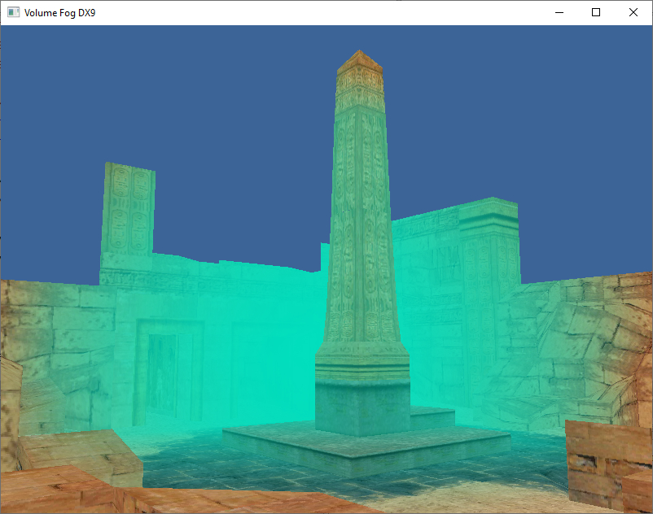

Объемный туман из компьютерной игры Tomb Raider 4 (Fog Bulb)

Загрузить исходный код для Visual Stduio 2005 и DirectX 9 June 2010 SDK ЗДЕСЬ.
Тот же принцип объемного тумана из TR4 реализованный на Visual Stduio 2019 и DirectX 12 ЗДЕСЬ.
Алгоритм программы следующий (для Visual Stduio 2005 и DirectX 9 June 2010 SDK).
- Есть исходные данные - позиция наблюдателя (камеры), есть вершины треугольников сцены (сама сцена на экране), и так же сфера, размещенная на этой сцене. Каждая вершина треугольников сцены имеет формат - координаты x,y,z, зеркальная составляющая цвета вершины, текстурные координаты.
- На следующем этапе есть цикл в котором мы перебираем все вершины сцены (функция Update). В этом цикле мы проводим вектор от позиции камеры до вершины (каждого треугольника сцены). И проверяем- пересекает этот вектор сферу на сцене или нет. Если пересекает есть две точки пересечения - вход вектора в сферу и выход из сферы. Мы берем эти две координаты и узнает между ними расстояние. Это расстояние принимается за интенсивность тумана - пересечение вектора ближе к краю сферы дает меньшую интенсивность тумана, пересечение ближе к центру сферы дает большую интенсивность тумана, так как расстояние между точками перечечения разное.
- В этом же цикле когда мы перебираем все вершины, и узнали интенсивность тумана, эту интенсивность записываем как альфа- составляющую зеркального цвета вершины, rgb компоненты зеркального цвета не имеют значения, могут быть ноль.
- Теперь можно перейти к рисованию сцены с туманом - устанавливаем renderstate cullmode, если нет нормалей в вершинах (у нас нет) устанавливаем render state lighting false, и теперь самое главное: D3DRS_FOGENABLE -> true, устанавливаем цвет тумана D3DRS_FOGCOLOR, устанавливаем Fog End и Fog Start, и самое важное устанавливаем D3DRS_RANGEFOGENABLE -> true.
- Вызываем функцию DrawPrimitive() для отрисовки сцены.
m_pD3DDevice->SetRenderState(D3DRS_FOGENABLE, TRUE);
DWORD fog_colr = D3DCOLOR_ARGB(0xFF, 0, 223, 191);
m_pD3DDevice->SetRenderState(D3DRS_FOGCOLOR, fog_colr);
float m_fFogStart = 1024.0f * 12.0f;
float m_fFogEnd = 1024.0f * 20.0f;
m_pD3DDevice->SetRenderState(D3DRS_FOGSTART, *(DWORD *)(&m_fFogStart));
m_pD3DDevice->SetRenderState(D3DRS_FOGEND, *(DWORD *)(&m_fFogEnd));
m_pD3DDevice->SetRenderState(D3DRS_RANGEFOGENABLE, TRUE);